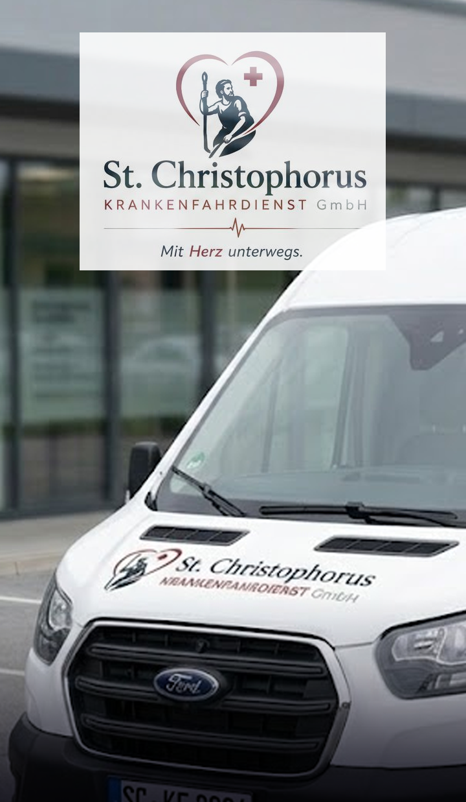

St. Christophorus
Krankenfahrdienst GmbH
Mit Herz. Mit Verantwortung. Sicher ans Ziel.
Ihr zuverlässiger Partner für Krankenfahrten und Patiententransporte in Bayern.
Ob Arztbesuch, Dialyse, Chemotherapie oder Reha – wir bringen Sie sicher, pünktlich und komfortabel ans Ziel.
Herzlich willkommen bei der St. Christophorus Krankenfahrdienst GmbH
Mobilität bedeutet Lebensqualität – besonders dann, wenn gesundheitliche Einschränkungen den Alltag erschweren. Unser Ziel ist es, Menschen sicher, pünktlich und komfortabel zu ihren medizinischen Terminen zu begleiten.
Ob Arztbesuch, Krankenhausaufenthalt, Dialyse, Chemotherapie, Reha oder private Krankenfahrt – wir stehen Ihnen mit einem zuverlässigen und professionellen Fahrdienst zur Seite.
Unsere Fahrgäste können sich auf moderne Fahrzeuge, freundliche Fahrer und einen Service verlassen, der weit über den eigentlichen Transport hinausgeht. Für uns steht der Mensch immer im Mittelpunkt.

Unsere Leistungen
Professionelle Krankenfahrten ganz nach Ihren Bedürfnissen.
Krankenfahrten
Wir bringen Sie zuverlässig zu Ärzten, Fachärzten, Krankenhäusern und medizinischen Einrichtungen – für alle Kassen.
Rollstuhlfahrten
Unsere speziell ausgestatteten Fahrzeuge ermöglichen einen sicheren und komfortablen Transport im Rollstuhl – ohne unnötiges Umsetzen.
Liegendtransporte
Für Fahrgäste, die während der Fahrt liegen müssen, bieten wir professionelle Liegendtransporte mit entsprechend ausgestatteten Fahrzeugen an.
Dialysefahrten
Regelmäßige und pünktliche Fahrten zu Dialysezentren gehören zu unseren wichtigsten Leistungen.
Chemo- und Strahlentherapie
Wir sorgen dafür, dass Sie Ihre Behandlung stressfrei und zuverlässig erreichen – einfühlsam und auf Ihre Bedürfnisse abgestimmt.
Entlassungsfahrten
Nach Ihrem Krankenhausaufenthalt bringen wir Sie sicher nach Hause oder in eine Pflegeeinrichtung.
Reha- und Kurfahrten
Komfortable Fahrten zu Rehabilitationskliniken und Kureinrichtungen in ganz Bayern – zuverlässig und termingerecht.
24h Rufbereitschaft
Rund um die Uhr an 365 Tagen im Jahr erreichbar – schnelle Hilfe und kompetente Beratung für Ihre Krankenfahrt.
Darauf können Sie sich verlassen
Jede Fahrt ist Vertrauenssache.
Deshalb legen wir größten Wert auf Zuverlässigkeit, Freundlichkeit und Professionalität. Unser Anspruch ist es, dass sich jeder Fahrgast während der gesamten Fahrt sicher und gut aufgehoben fühlt.
Mit Respekt, Einfühlungsvermögen und Verantwortungsbewusstsein begleiten wir Menschen jeden Alters zu ihren medizinischen Terminen.
Für wen wir fahren
Unser Fahrdienst richtet sich an Menschen mit unterschiedlichsten Bedürfnissen.
Unser Einsatzgebiet
Wir sind für Sie unterwegs – und nach Vereinbarung in ganz Bayern.